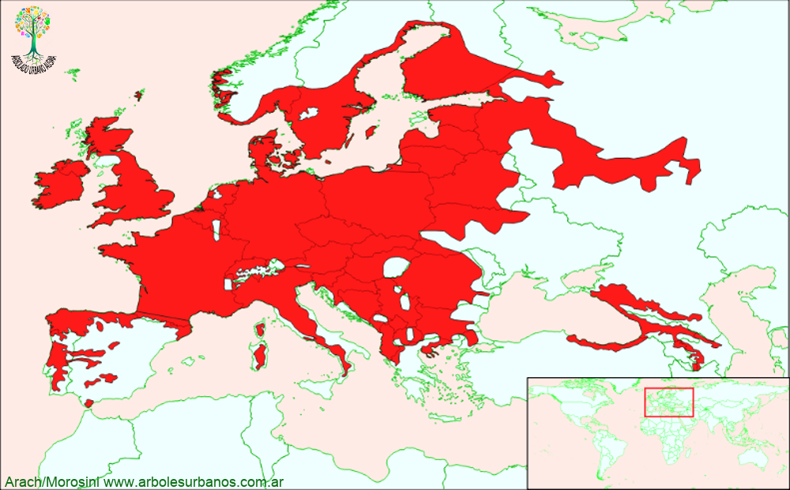

Click en las imágenes para ampliar

{kind=link}
{kind=link}
{kind=link}
{kind=link}
- NOMBRE CIENTÍFICO
- Alnus glutinosa
- FAMILIA BOTÁNICA
- Betuláceas
- ORIGEN
- Es de amplia distribución, ocupando principalmente casi toso el continente europeo, llegando hasta los Urales y Norte de África.
- DESCRIPCIÓN GENERAL
- Árbol de porte mediano que alcanza los 20 metros de altura. Posee una copa anchamente cónica. Su corteza es de color oscura, rugosa, agrietándose con la edad. Hojas caducas, alternas, simples, obovadas, con borde irregularmente dentado, de color verde oscuro, en su cara superior, más clara en la inferior.
- FLORES
- Tanto las flores masculinas como las femeninas crecen en el mismo pie. Las masculinas son amentos cilíndricos colgantes verde amarillentos, las femeninas, estróbilos verdes. Ambas aparecen a principio de la primavera.
- FRUTOS
- agrupados en racimos de a 3 u 8. Son de color marrón y tienen consistencia semileñosa, permanecen durante el invierno en la planta, albergan pequeñas semillas de color negro.
- USOS
- su madera puede permanecer muchos años sumergida en agua, por lo cual se la ha utilizado históricamente en la construcción de palafitos, muelles y engranajes de molinos hidráulicos. La corteza tiene usos medicinales.
- REPRODUCCIÓN
- se lo puede multiplicar por semillas, también por estacas.
- PARTICULARIDADES
- es una especie pionera y colonizadora que avanza por las riberas de los ríos y arroyos, pudiéndose observar este comportamiento en el Arroyo Pocahullo.